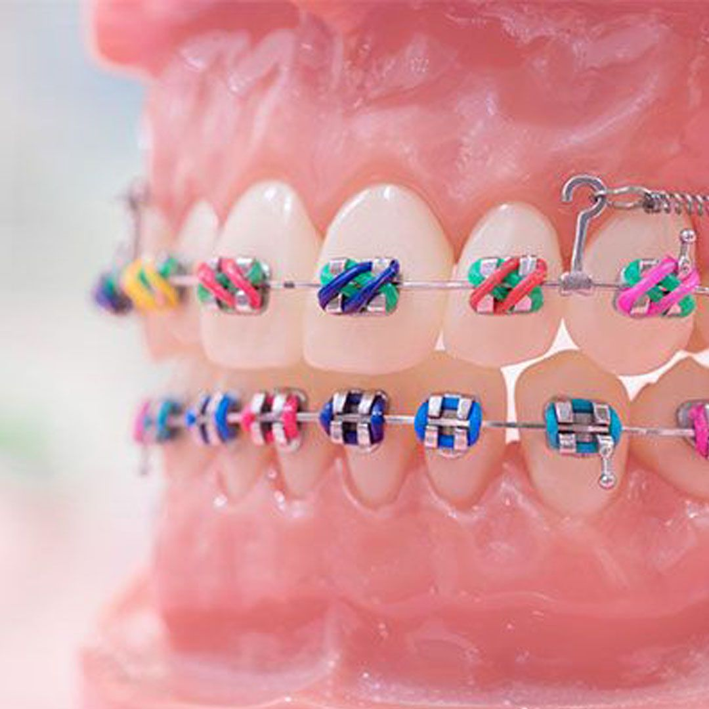

ORTODONCIA DENTIS
Trabajamos con los mejores materiales y tecnicas avanzadas

Se utiliza en pacientes con dentición adulta, sin ningún inconveniente. La ortodoncia fija consiste en el cementado, en cada diente, de un pequeño bracket, el cual debe mantenerse durante todo el tratamiento.
Los brackets pueden ser fijos metálicos (acero inoxidable), fijos estéticos (porcelana) y fijos de Zafiro. Todos los tratamientos son idénticos en cuanto a los objetivos, función y tiempo. La diferencia radica en la estética de los mismos.